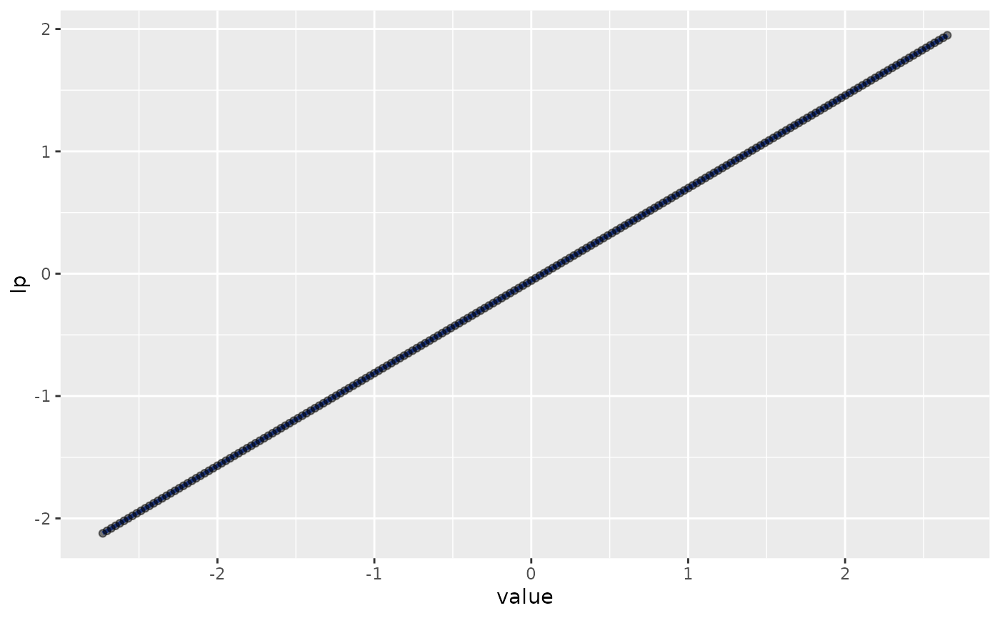

Plot non-linear functions for BHAM objects
plot_smooth_term(mdl, term, smooth, min, max, plot = TRUE)a logic variable, indicating if ggplots are produced
a vector of characters containing the variable names
library(glmnet); data("QuickStartExample") # Load example data
#> Loading required package: Matrix
#> Loaded glmnet 4.1-8
x <- QuickStartExample$x; colnames(x) <- paste0("X", 1:ncol(x))
y <- QuickStartExample$y
dat <- data.frame(x, y)
spl_df <- data.frame(
Var = colnames(x),
Func = "s",
Args ="bs='cr', k=7"
)
train_sm_dat <- construct_smooth_data(spl_df, dat)
train_smooth <- train_sm_dat$Smooth
train_smooth_data <- train_sm_dat$data
# Not implmented yet
# mdl <- bgam(y~.-y,
# data = data.frame(train_smooth_data, y = y), family = "gaussian",
# prior = mde(), group = make_group(names(train_smooth_data))
# )
mdl <-bamlasso(x = train_smooth_data, y = y, family = "gaussian",
group = make_group(names(train_smooth_data)))
plot_smooth_term(mdl, "X3", train_smooth, min = min(x[,"X3"])-0.1, max = max(x[,"X3"]) + 0.1)
#> `geom_smooth()` using method = 'loess' and formula = 'y ~ x'
